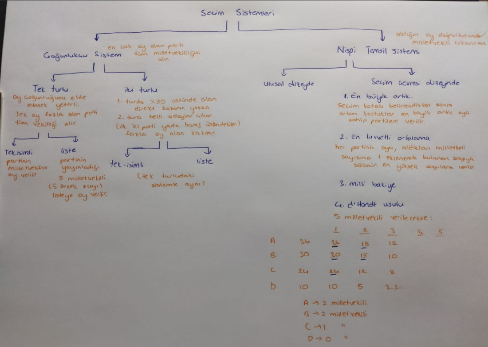

1) Devletin temel organlarının ayrımı
yasama: meclis (TBMM)
- kurallar koyar
- kanunlar parlamentoda yapılır ve anayasaya aykırı olamaz.
- hiçbir organ yasamadan almadığı yetkileri kullanamaz
yürütme: hükümet
- yasaları uygular
- yetkilerini alırken asli bir yetki kullanmaz
- yasama organı, yürütmenin sınırlarını belirler.
- yürütme yapılanmaları:
- a) parlamenter sistem (iki başlı)
- b) başkanlık sistemi (tek başlı)
*devlet başkanı + bakanlar kurulu*
*başkan*
yargı: bağımsız mahkeme
- uyuşmazlık çözümü için bir işleyiş görevindedir.
- hazır bulunan yasaların işlerliğini ve denetimini sağlar.
- yasama ve yürütmenin mahkeme tarafından alınan karara uyma zorunluluğu vardır.
- meclis anayasaya aykırı bir kanun çıkardığında anayasa yargısı devreye girer.
- anayasa yargısı 1961 anayasası ile düzenlenmiştir.
2) Anayasa hukukunda yönteme ilişkin bilgi
hukuki yöntem:
yürürlükteki hukuk kurallarını inceleyip bunları olaylarla karşılaştırmaktır.
böylece yürürlükteki kuralların yorumlanması ve mahkeme kararlarının incelenmesi yapılmaktadır.
hukuki yöntemin uygulanmasında başvurulan mantık yolu tümdengelimdir.
siyasi bilimler yöntemi:
gözleme dayanır, tümevarım kullanır. yani özelden genele.
3) Anayasa hukukunun kaynakları
hukukta kaynak denince, hukuku yapan, yaratan ve oluşturan varlık anlaşılır. hukuk kaynakları dört grupta toplanır:
a) bilgi kaynakları:
yürürlükteki kural, karar ve belgelerin bulundukları resmi yayınlar (resmi gazete, düstur, tutanak dergileri)
metin, belge ve mahkeme kararlarını toplayan resmi olmayan belgeler (dergi, külliyat, kitap)
b) yaratıcı kaynaklar:
hukuku yaratan yetkili organlar söz konusu olduğunda kanun koyan yasama meclisleri, düzenleyici işlemler yapan yürütme gibi kaynaklardan söz edilir.
c) sosyolojik kaynaklar:
hukuk kuralları tarihi gelişim içinde, ekonomik, sosyal ve kültürel ihtiyaçların etkisiyle, toplum bünyesinde gelişmiştir.
d)yürürlük kaynakları:
hukuka normlar sistemi içinde biçimini veren kaynaklar olup, hukuk düzeninde varlık kazanmak için büründükleri ya da aldıkları biçimdir. örneğin, yasama meclislerinin kural işlemleri kanun veya karar biçimlerinde; yürütmenin düzenleyici işlemleri tüzük, yönetmelik biçimlerinde yürürlüğe girer.
4) Anayasa kavramının tanımı
anayasa hukuk kurallarından oluşur
anayasa hukuku, yasama yürütme ve yargı gibi devletin temel organlarının kurulusunu, işleyişini ve bu organlar arasındaki karşılıklı ilişkileri ve devlet karsısında vatandaşların temel hak ve özgürlüklerini düzenleyen hukuk bilim dalıdır.
Anayasa: genel anlamda iktidarın sınırlandırılması
anayasal nitelikteki kuralların toplamıdır.
*anaysa hukuk kurallarından oluşur*
*anayasa her türlü hukuk kuralından değil anayasal nitelikteki hukuk kurallarından oluşur*
Hukuk kuralı nedir?
devletin yetkili organları tarafından konulan,
insan davranışlarını düzenleyen
cebir ile müeyyidelendirilmiş
emir, yasak, izin. yetkilerdir.
dört şartı bulunur:
- bir emir yasak izin yetki içermeli
- bir insan davranışını düzenlemeye yönelik olmalı
- devletin yetkili bir organı koymalı
- cebir ile müeyyidelendirilmiş olmalı
*buna normatiflik denir*
anayasal nitelikteki hukuk kuralı
bir kuralın anayasal nitelikte olup olmadığına iki şekilde bakarız:
- maddi kriter --> kuralın içeriği
- şekli kriter --> bulunduğu yer, yapılış değiştiriliş şekli
maddi kriter
kuralın neyi düzenlediğine bakar
eğer devletin ana işleyişini organlarını düzenliyorsa anayasa kuralı sdfsdfsdfdsdfsfsdfsfsdfsdfsfsdfsfs
şekli kriter
eğer normlar hiyerarşisinin en üstünde yer alıyorsa,
kanunlardan daha zor değiştiriliyor, düzenleniyorsa
içeriğe bakmaksızın anayasa kuralıdır.
normlar hiyerarşisi:
anayasa
kanun
tüzük
yönetmelik
bu kavramlar rastgele bulunmazlar. alt üst ilişkisi vardır.
5) Hukuk devleti
- devletin koyduğu kurallara kendisi de uymasıdır.
- hukuka bağlı iktidar ortaya çıkarma çabasıdır.
- keyfi yönetimi engellemeyi ve iktidarı sınırlandırmayı amaçlar.
bir devletin hukuk devleti olması için:
- konulan tüm hukuk kurallarına devlet organlarının uyması,
- kuralların kaynağı insan hakları olmalıdır.
hukuk devleti ile neyi kast ediyoruz?
- eylem ve işlemleri yargısal denetime bağlı olan
- insan haklarına dayanan
- adaletli hukuk düzeni kuran
- yasal düzenlemelerde belirlilik ilkesine uyan
- kişilere hukuk güvenliği sağlayan
- hukuku tüm devlet organlarına egemen kılan
- kurumların üstünde, yasa koyucunun bozamayacağı temel hukuk ilkeleri ve anayasanın bulunduğunun bilincinde bir devlet
*bu ilkeden hareketle yasama organı ve hukuka bağlı iktidar, yargı denetimiyle denetlenir.
yargısal denetim yapılmazsa keyfilik başlar*
6) Anayasa türleri
yazılı anayasa/ yazısız anayasa
yazılı anayasa:
- okunabilir
- anayasa içinde olması gerekenlerin yetkili bir organ tarafından belirli bir belge içinde toplamasıdır
- osmanlıda ilk defa kanun i esasi ile ortaya çıkar.
- yazılı anayasanın yapılma amacı:
*tek bir metinde toplanmak zorunda değiller*
- iktidarın sınırlandırılması
- temel hak hürriyetlerin sınırlandırılması
- hukuka bağlı iktidar ortaya çıkarma çabası (hukuk devleti ve hukukun üstünlüğü ilkeleri)
yazısız anayasa (teamül i anayasa)
- her şeyden önce yazılı anayasaya karşıdır
- örf ve adet hukuku uygulanır
*bir kuralın örf ve adet kuralı olması için üç şartı vardır
- maddi şart: kural toplum içinde sürekli tekrarlanmalı
- manevi şart: kurala uyulması zorunlu inancı toplumda bulunmalı
- hukukilik şartı: kuralın hukuk düzeni tarafından müeyyidelendirilmesi lazım
yazısız anayasayı bir cümlede toplarsak:
devletin temel organlarının kuruluş ve işleyişi konusunda eskiden beri sürekli olarak tekrarlanan ve bağlayıcı olduğuna inanılan ve uyuşmazlık halinde hukuk düzeni tarafından müeyyidelendirilen kuralların bütünüdür. en bilinen örneği ingiltere.
yazısız anayasa gerçekten anayasa mı?
şekli bakımdan değil. şekli > maddi
*normlar hiyerarşisinin en üstünde değil ingiliz parlamentosu normal bir kanunla değiştirebilir*
yumuşak anayasa/ katı anayasa
yumuşak anayasa:
kanunlarla aynı usullerle ve organlarca değiştirilebilir.
yazısız anayasalar -varlıklarını kabul edersek- yumuşak anayasadır
anayasaya katılık sağlamanın farklı yolları şunlardır:
a) özel meclis usulü:
anayasa değişikliği amacıyla kurulmuş özel bir meclisin, anayasayı değiştirmesi ona katılık sağlar
b)üye tamsayısının salt çoğunluğu kuralı
normal kanunların kabul edilmesi için adi çoğunluk yeterlidir. anayasa değişimi için salt çoğunluk gerekiyorsa o anayasa katıdır
c) nitelikli çoğunluk kuralı
anayasanın değişmesi için parlamentonun beşte üçü, üçte ikisi, dörtte üçü gibi nitelikli çoğunluk gerekiyorsa o anayasa katıdır.
d)halkoylaması
kanunlar için aranmadığı halde, bir anayasanın değiştirilebilmesi için halk oylamasına sunuluyorsa o anayasa katıdır.
e)değiştirilemeyecek maddeler veya ilkeler
bir anayasanın bazı maddelerinin değiştirilmesi yasak ise o anayasa katıdır.
f)süre yasağı
bir anayasanın kabul edilmesinden itibaren belli bi süre değiştirilmesi yasaksa o anayasa katıdır.
g)dönem yasağı
bir anayasa kendinin belirli dönemlerde değiştirilmesini yasaklıyorsa o anayasa katıdır.
h)değişikliğin ikinci defa kabul edilmesi
bazı anayasalar anayasa değişikliğinin kesinleşebilmesi için kabul edilen değişikliğin belli bir süre sonra parlamento tarafından yeniden seçilmesi şartını öngörür
ı) devlet başkanına mutlak veya güçleştirici veto yetkisi tanınması
normal kanunlarda devlet başkanına veto yetkisi tanınmadığı halde anayasa değişikliği için tanınması anayasayı katılaştırır
veto: bir yasanın, bir yetkinin, bir kararın yürürlüğe girmesine karşı çıkma hakkı
i) federe devletlerin onayı
federal devletlerde federal anayasanın değiştiriliş usulüne federal devletler de dahil edilir.
örnek: kongre tarafından üçte iki oy çoğunluğuyla kabul edilen anayasa değişikliğinin gerçekleşebilmesi için federe devletlerin en az dörtte üçünün yasama organlarının dörtte üçü tarafından onaylanması gerekir.
bir anayasa yukardaki maddelerden en az birini içeriyorsa katıdır.
anayasaların katılık derecesi değişir, birbiriyle kıyaslanabilir.
ama bazen kıyaslamak çok güçtür.
optimal katılık derecesi nedir?
anayasa ne kadar katı olmalıdır sorusuna net bir cevap verilemez.
- anayasa tamamen katı olmamalı, değiştirilebilir olmalıdır. anayasalar değiştirilemez ebedi ezeli metinler değillerdir. bir kuşağın getirdiği anayasaya başka bir kuşak sonsuza kadar bağlı olmak zorunda değildir. çok katı bir anayasa hukuki yollardan değiştirilemediğinde başka yollardan değiştirmeye teşebbüs edecek insanlar anayasaya yarar değil zarar verirler.
- anayasa çok yumuşak olursa bizzat anayasa tanımıyla çelişir.
- devletin temel organlarının kuruluş ve işleyişine istikrar kazandırmak az çok katı bi anayasayla mümkündür.
- bu katılığın derecesini saptamak çok zordur.
- mühim olan şudur: anayasa, sadece parlamentonun çoğunluğuna sahip iktidar partisi tarafından değiştirilemesin. değiştirebilmek için iktidar partisi, muhalefet parti ile anlaşmak zorunda kalsın.
kazuistik anayasa/ çerçeve anayasa
çerçeve anayasa
anayasa metni, genel ilkeleri düzenleyip çerçeve çizip içinin doldurulmasını kanunlara bırakıyorsa bu anayasa çerçeve anayasadır.
kazuistik anayasa
ayrıntılı ve uzun düzenlemeler içeren anayasa metnidir.
7) Siyasi iktidar
- iktidar emretme ve itaate dayanmaktadır
- siyasi iktidar konusunda başlıca iki görüşten söz edilir:
- iktidarın siyasi nitelikte olabilmesi, iktidarın hangi tür toplulukta kullanıldığına bağlıdır. özel gruplarda ortaya çıkan iktidarın tersine; siyasi iktidar, global gruplarda ortaya çıkar.
- siyasi iktidar sadece milli devlette ortaya çıkar.
- iktidar sahipleri, egemen bir niteliğe sahiptir.
Siyasi iktidarın özellikleri
- bu otoriteler, belirli toprak parçası üzerinde sınırlanmış yetkiye sahiptir. bu sınırlar içinde faaliyetteki tüm gruplar onlara tabiidir.
- devlet otoriteleri, sınırları içinde, alınan kararları uygulamak üzere egemen kamu gücüne, güç kullanma yetkisine sahiptirler.
- devletlerarası ilişkiler, eşitlikçi ve uzlaşmacı antlaşmalara dayanmaktadır.
Siyasi iktidarın kaynağı ve meşruluğu
- meşruluk, devlet iktidarının kaynağı ve kullanışının yönetilenlerin inançlarına uygun olmasıdır.
A) Teokratik görüşler
- dinsel kaynaklı, ilahi temelli görüşlerdir.
a) doğa üstü ilahi hukuk doktrini:
iktidar, tanrının seçtiği kişiye verilmiştir.
b) providansiyel ilahi hukuk doktrini:
hükümdar doğrudan tanrı tarafından seçilmez, ona karşı sorumludur.
B) Demokratik görüşler
- egemenlik tanrıya değil insanlara aittir.
- egemenlik meşruluğunu genel iradeden alır. Yani halkı oluşturan her bireye, şu an yaşayan insanlara aittir.
- temsili demokrasiyle uymaz
- oy kullanmak haktır, seçmenlik hak.
- doğrudan veya yarı-doğrudan demokrasiyi gerektirir.
- temsilciler halkın iradesiyle bağlıdır.
- emredici vekalet, halkın temsilcileri halkın emirleriyle bağlıdır ve bu emirleri yerine getirmek zorundadır.
- kuvvetler birliği, meclis hükümeti sistemi savunur.
- halkın verdiği emirleri yerine getirmeyen temsilciler halk tarafından görevden alınabilir. (temsilcilerin azli)
- tek meclisle bağdaşır, iki meclisliliğe karşıdır.
- anayasa yargısıyla bağdaşmaz
- halkın onamadığı hiçbir yasa geçerli değildir.
- milletvekilleri halkın temsilcisi değildirler ve olamazlar.
- bireyler arası mutlak eşitlik.
- genel oy ilkesi görülür.
a) halk egemenliği
*çünkü halk canlı kanlıdır.*
b) milli egemenlik
- egemenlik tektir, bölünemez ve millete aittir.
- seçmenlik bir görevdir.
- mecburi ve sınırlı oy ilkeleri görülür.
- temsili demokrasi gerektirir
- emredici vekalet yasağı vardır. milletvekilleri kendilerini seçenden emir/talimat almazlar.
- kuvvetler ayrılığı ilkesiyle bağdaşır.
- temsilcilerin azliyle uyuşmaz.
- iki meclisli parlamentolarla bağdaşır.
- yargısal denetimle uyum içindedir.
- çoğunluk her zaman iyi kararlar almayabilir, gelecek nesiller için kararlar düzenlenebilmeli veya iptal edilebilmelidir.
- çift meclis daha iyi kanun yapmak için vardır.
- çoğunluğun iradesi esas değildir, çoğunluk yanılabilir.
- çoğunluğu frenlemek gerekebilir.
- egemenlik tek tek vatandaşlara değil millete aittir.
- anayasalar halk egemenliği özellikleri taşısalar da genelde milli egemenlikle oluşturulurlar.
*mecburi oy ilkesi: oy vermek sadece hak değil görev, sorumluluktur.
sınırlı oy ilkesi: kişiye çıkarılan seçmen sayısından az oy verme hakkı sunulması
örnek: 5 milletvekili adayı varken 3 oy hakkı tanınması*
halk egemenliği ve milli egemenlik arasındaki farklar:
- millet kavramı, halktan daha genel, soyut ve tüzel bir anlama sahiptir. millet, geçmiş nesilleri, şimdiki nesilleri ve gelecek nesilleri kapsayan bölünemez bir bütündür. halk ise daha somuttur. canlı kanlı yaşayan, oy kullanma hakkına sahip vatandaşları kapsar.
8) Anayasa hukukunda yorum
yorumun konusu metindir.
aynı hukuk metni farklı yorumcular tarafından farklı yorumlanabilir.
A) Lafzi yorum (deyimsel, dilbilgisel) yöntemi
- anayasa maddesinin anlamı, metinde kullanılan kelimelere, kelimelerin cümledeki yerine, söz dizimine ve noktalama işaretlerine bakarak tespit edilir.
- anayasa koyucusunun niyeti araştırılır.
- anayasa maddesinin anlamı için, maddenin içinde bulunduğu bağlama, diğer maddeler karşısında sistemde nerde bulunduğuna bakılır.
B) Tarihi yorum yöntemi
C) Sistematik yorum yöntemi
9) Devlet
devletin,
beşeri unsuru --> insan
toprak unsuru --> ülke
iktidar unsuru --> egemenlik
devletin oluşabilmesi için insan topluluğunun (millet) bir ülke üzerinde egemen olması gerekir.
devlet şekilleri/ yönetimleri
A) Cumhuriyet
- dar anlamda monarşinin tersidir.
- geniş anlamda demokrasinin temel prensiplerini içine alan kavramdır.
*demokrasinin temel ilkeleri:
*1) hukukun üstünlüğü
*2) güçler ayrılığı
*3) siyasi partiler(çoğulculuk)
*4) eşitlik
*5) insan haklarına saygı
*6) hürriyet
*7) özgürlük
*8) milli egemenlik
B) Monarşi
saltanat haklarının sınırlanmasına göre ikiye ayrılır.
1)mutlak monarşi
- monark sınırlandırılmamıştır.
- monark sınırlandırılmıştır.
2)meşruti monarşi
tahta geçişe göre de ırsi ve seçimli monarşi olarak ikiye ayrılır.
10) Devlet Biçimleri/ Oluşumları
Devlet biçimleri oluşumu
A) tek yapılı devlet B) karma yapılı devlet
a) merkezi tek yapılı d. b) bölgesel d. a)konfederasyon b) federasyon
1)TEK YAPILI (ÜNİTER) DEVLET:
A) Merkezi tek yapılı devlet
- ülke sınırları içinde yasama-yürütme ve yargılama birliği var
- tek ülke tek millet tek egemenlik ilkeleri hakimdir.
- tek yasama organı, tek yasama yetkisi var
- yerel yönetimler kanun yapamaz
idari teşkilat
idari teşkilat başlı başına bir konu olsa da tek yapılı devletin alt başlığı olarak verilir çünkü
"bu devlet tipinde idari yapı nasıl kurulur?" sorusunun cevabı idari teşkilattır.
a) devletin merkezi idaresi: bakanlar teşkilatı (bakanlar) ve taşra teşkilatı (kaymakam, vali vs)
- teşkilatlar devletin tüzel kişiliğinde yer alır.
- teşkilatların gelir ve giderleri tek bütçede toplanır.
- taşra teşkilatı, merkezin bir uzantısı konumundadır.
- başkent > taşra
ademi temerküz (yetki genişliği): merkezden yönetimin sakıncalarını gidermek amacıyla,
merkez yönetiminin taşrada görevli yüksek memurlarına sınırlı olarak belirli konularda karar alma ve uygulama yetkisi verilmesidir.
*bu ilke yetkilerin merkezde yoğunlaşmamasını, bazı yetkilerin merkeze gönderilen görevliler aracılığıyla yerinde kullanılmasını sağlar*
b) yerel yönetimler
- mahalli idareler ayrı bir tüzel kişiliğe sahiptirler ve özerktirler.
- kendilerine has mal varlıkları ve bütçeleri vardır.
- yasama ve yargı yetkileri yoktur.
- Türkiye'de üçe ayrılır:
- iller (vali vb.)
- belediyeler(belediye başkanı vb.)
- köyler (muhtar vb.)
idari vesayet: yerinden yönetimin sakıncalarını giderebilmek için merkezi yönetime, mahalli yönetim üzerinde sınırlı bir denetim yetkisi verilmesidir.
*idari vesayet, genel bir yetki değildir. bu yetki yasalarla belirlenen durumlarda, yasanın çizdiği sınırlarda kullanılması gereken bir denetimdir.*
B) Bölgesel devlet:
- milletin tekliği ve bölgenin özerkliği gibi iki zıt ilkeyi bir araya getirir.
- özerk bölgelerin belli konularda yasama yetkisi vardır.
- özerk gölgelere verilen yetkiler kendilerine anayasayla verilir.
- özerk bölgeler yargı yetkisine sahip değildir.
- örnek: ispanya ve italya
2)KARMA YAPILI DEVLET
A) konfederasyon
- birden fazla bağımsız devletin bir amaçla (genellikle savunma) bir araya gelmesiyle oluşur.
- her üye devlet bağımsızlığını korur.
- uluslararası tek bir devlet sayılmaz
B) federasyon
- devlet, birden fazla federe devletin (eyalet) birleşiminden oluşur.
- her federe birimin kendi yasama, yürütme ve yargısı vardır.
- uluslararası düzende tek devlet sayılır.
11) Demokrasi
1)Demokrasi teorileri
A) normatif demokrasi teorisi
- demokrasi halk tarafından halk için halkın yönetimidir.
- normatif demokrasi demokratik rejimlerin ulaşmak istediği bir idealdir.
B) ampirik demokrasi teorisi
- kabataslak demokrasileri ele alır, ideale değil olana bakar.
- bir siyasal rejimin demokratik olarak nitelendirilmesi için 6 şartı taşımalıdır:
- etkin siyasal makamlar seçimle belirlenmelidir.
- seçimler düzenli aralıklarla tekrarlanmalıdır.
- seçimler serbesttir; genel oy, eşit oy, gizli oy, açık sayım ilkeleri uygulanmalıdır.
- birden çok siyasal parti vardır. tek partili rejim demokratik kabul edilmez.
- muhalefetin iktidar olma şansı mevcuttur. bugünün muhalifi yarının iktidarı olabilir.
- temel kamu hakları tanınmış ve güvence altına alınmıştır: düşünce, basın, söz, toplantı, yürüyüş yapma
--> demokrasi; etkin siyasal makamların düzenli aralıklarla tekrarlanan birden fazla siyasal partinin katıldığı muhalefetin iktidar olma şansının olduğu serbest seçimlerle belirlenen ve temel kamu haklarının tanınıp güvence altına alındığı bir rejimdir.
2)Demokrasi anlayışları
A) çoğunlukçu demokrasi anlayışı
- çoğunluk prensibine dayanır.
- demokrasi çoğunluğun yönetimidir.
- çoğunluğun gücü her şeyin üzerindedir. devlet buna göre karar almalıdır.
- kökeni j.j. rousseaunun genel irade görüşüdür.
- genel irade mutlak sınırsız devredilemez temsil edilemez dönülemez ve daima kamu iyiliğine yönelmiş yanılmaz bir iradedir.
- çoğunluğun yönetimi mutlak sınırsızdır.
B) çoğulcu demokrasi anlayışı
- toplumun çoğunluk tarafından yönetileceğini reddetmez ama çoğunluk yönetimi ve azınlık hakları arasında bir denge kurulması gerektiğini savunur.
- çoğunluğun yönetim hakkı mutlak değildir, azınlığın temel haklarıyla sınırlıdır.
- çoğunluğun iradesini sınırlayıcı tedbirler yazılı ve katı anayasa teorisi, kuvvetler ayrılığı teorisi, çift meclis sistemi, kanunların anayasaya uygunluğunun yargısal denetimi vb.
3)Demokrasi modelleri
a) çoğunlukçu demokrasi modeli (westminster): hükümet halkın çoğunluğuna hizmet etmelidir.
b) uzlaşmacı demokrasi modeli (oydaşmacı): hükümet mümkün olduğunca fazla kişinin çıkarına hizmet etmelidir
A) çoğunlukçu demokrasi (westminster) modeli:
- hükümetler koalisyon partileri tarafından değil, tek parti tarafından oluşturulurlar.
- hükümet parlamento karşısında üstündür.
- iki parti sistemi vardır. genellikle seçimler iki büyük parti arasında döner.
- çoğunluk seçim sistemi vardır.
- hükümet karşısında sendika konfederasyonları, meslek birlikleri gibi büyük ve güçlü örgütler yoktur.
- üniter ve merkeziyetçi devlet yapısı vardır.
- yasama iktidarı tek mecliste toplanmıştır.
- anayasa yazılı ve yazısız olmakla birlikte yumuşaktır.
- hükümet eli sınırlanamaz.
- yargının yürütme üzerindeki etkisi zayıftır. genelde anayasa mahkemesi yoktur.
- merkez bankası hükümetin elindedir.
- azınlığı ebediyen muhalefette kalmaya mahkum eder.
*örnek: ingilterede muhafazakar parti ve işçi partisi*
B) uzlaşmacı (oydaşmacı) demokrasi modeli
- bu modelde çeşitli gruplar arasında iktidar paylaşımı ve uzlaşma esas alınır.
- yürütme ve yasama arasında bir kuvvet dengesi vardır, biri diğerinden üstün değildir.
- çok partili sistem vardır, farklı ideolojik temsiller mümkündür.
- nispi seçim yöntemi uygulanır.
- hükümet karşısında sendika konfederasyonları, meslek birlikleri gibi büyük, güçlü örgütler vardır.
- federal ve ademi merkeziyetçi devlet sistemi vardır.
- birinci ve ikinci meclislerin kuvvetleri ya eşit ya çok yakındır
- yazılı, katı bir anayasası vardır. değiştirilmesi zordur, yargı güvencesi vardır.
- merkez bankası bağımsızdır.
- azınlığı siyasi karar sürecine dahil eder.
*nispi seçim: oy oranına göre sandalye dağıtılır, küçük partiler de mecliste yer bulabilir*
*yani yetkiler merkezle yerel yönetim arasında paylaştırılmıştır*
4)Egemenliğin kullanılması bakımından demokrasi tipleri
A) Doğrudan demokrasi
- halk egemenliğini bizzat doğrudan doğruya kullanır.
- ne parlamento, ne hükümet, ne de yargı organı vardır.
- yönetilenler bizzat yönetendirler.
- halkın halk tarafından yönetilmesini öngörür. (saf demokrasi)
B) Temsili demokrasi
- halk egemenliğini kendi seçtiği temsilciler aracılığıyla kullanır.
- millet sahip olduğu egemenliği değil, kullanma hakkını temsilcilere devreder.
- temsilcilere egemenliğin kullanılması hakkı seçmenlerle devredilir.
- teorik olarak milli egemenlik sistemine dayanır.
- bu teoriye göre milletvekili ve onu seçen seçmenler arasında bir sözleşme vardır.
- milletvekili seçmenlerden aldığı talimatlara uymak zorundadır.
- seçmenler, milletvekilini görevden alma veya talimatla yönlendirme hakkına sahiptir.
- bu teori, doğrudan demokrasiye daha yakındır.
- modern temsili sistemlerde uygulanabilirliği zordur çünkü milletvekili sadece kendi seçmenini değil tüm milleti temsil eder.
- bu anlayışta milletvekili sadece seçmenini değil tüm milleti temsil eder.
- milletvekili seçmenlerin emrine bağlı değildir. bağımsız iradeyle karar verir.
- seçmenlerle milletvekili arasındaki ilişki siyasal niteliktedir. hukuki nitelikte değildir.
- milletvekili görevi boyunca seçmenden emir almaz. yalnızca millete karşı sorumludur.
- bu teori 1789 fransız devrimi sonrası gelişmiş, modern parlamenter sistemi oluşturmuştur.
yani egemenliğin kullanılmasının devri söz konusudur.
emredici vekalet teorisi:
temsili vekalet teorisi:
günümüz anayasal sistemleri temsili vekalet sistemini benimsemiştir.
temsili demokrasi, halkın egemenliğini korurken yönetimde istikrar sağlar. emredici vekalet, demokratik yönetimi artırsa bile pratikte uygulanamaz kabul edilir.
C) Yarı doğrudan demokrasi
- egemenliğin kullanılması halk ile temsilciler arasında paylaştırılmıştır.
- yarı doğrudan demokrasinin araçları
-->referandum:
- parlamento tarafından kabul edilen veya edilecek olan bir kanun metninin halkın oylamasına sunulmasıdır.
- parlamento tarafından kabul edilen kanunun, halkın inisiyatifi üzerine düzenlenen referandum sonucu reddedilmesidir.
- halkın istediği ama parlamentonun çıkarmaya yanaşmadığı konunun çıkarılmasını sağlayan araç
- temsilciden memnun kalmayan seçmenlerin kendi aralarında imza toplayarak görevden alınmasını ve yerine birinin seçilmesini teklif etmesi.
-->halk vetosu
-->halk teşebbüsü
-->temsilcilerin azli
12) Kurucu iktidar
- devleti, hukuki ve siyasi bir kurum olarak kuran iktidara ya da güce denir.
asli iktidar ve kurucu iktidar olarak ikiye ayrılır.
asli iktidar anayasayı yapan, tali iktidar yeniden yapan iktidardır.
kurulmuş iktidar
- yasama
- yürütme
- yargı
1)Asli kurucu iktidar
- anayasayı ilk kez ya da yeniden yapan iktidar.
- yeni bir devletin kurulması, savaş sonucu yok olan devletin yeniden ortaya çıkması, var olan anayasal düzenin bir ihtilal ya da darbe ile ortadan kaldırılmasıyla ortaya çıkar.
- hukuki ve fiili nitelik taşır, yani hukuk dışı bir fiil -örneğin devrim- sonunda hukuk yaratır.
- sınırsızdır ve hukuk dışıdır, yani üzerinde hukuk normu yoktur.
ortaya çıkabileceği durumlar
- devrim
- hükümet darbesi
- savaş sonrası
- sömürge olan ülkenin bağımsızlığına kavuşması
- birden çok devletin birleşip yeni devlet kurması
- bir devletin, bağımsız birden fazla devlete ayrılması
ANAYASA YAPMA USULLERİ
MONARŞİK USULLER DEMOKRATİK USULLER
FERMAN MİSAK KURUCU MECLİS KURUCU REFERANDUM
ferman: hükümdarın tek taraflı iradesini açıklama
misak: fermanın aksine, hükümdarın karşısında kendini ona kabul ettirebilen meclis vardır.
kurucu meclis: konvansiyon/ kurucu meclis, anayasa yapmak için halk tarafından seçilmiş özel bir meclistir.
kurucu referandum: kurucu meclisin demokratikliğinin sorgulanmasıyla ortaya çıkmıştır.
2)Tali kurucu iktidar
- bir anayasayı, o anayasada öngörülmüş usullerle değiştirme iktidarıdır.
- hukuki ve sınırlı nitelikte bir iktidar.
- tali iktidarın bazı sınırlamaları vardır.
- maddi sınırlar: bazı hükümlerin değişmesi yasaklanabilir.
- zamansal sınırlar: belirli dönemlerde değiştirilmesi yasaklanabilir.
- biçimsel sınırlar.
anayasada değiştirilmesi öngörülmeyen hükümler yoksa, tamamı bile değiştirilse tali kurucu iktidardan söz edilir. çünkü bu durumda hukuk boşluğu ortaya çıkmaz. tüm metin bile değişse bu eski anayasanın devamı kabul edilir.
13) Anayasa yapım süreci ve değiştirilmesi
anayasa değişikliği usulu:
1.AŞAMA: teklif yetkisi:
- teklif yetkisi zaman ve içerik bakımından sınırlanmış olabilir.
- yasamanın teklif yetkisi için teklif yetersayısı öngörülmüş olabilir.
- bu yetki; yasama organına, yasama ve yürütme organına, halka (halk teşebbüsü) ait olabilir.
2.AŞAMA: karar yetkisi
- yasamaya aittir. salt çoğunluk 3/5, 2/3, 2/4 gibi özel karar yetersayıları öngörülmüştür.
- bazı ülkelerde değişiklik teklifi 2 defa görüşülür.
3.AŞAMA: onay yetkisi
- devlet başkanına ait olursa devlet başkanı veto yetkisini kullanabilir.
a) geciktirici veto: kanun teklifi iade edilir, sonrasında aynen kabul alırsa devlet başkanı yayımlar.
b) güçleştirici veto: kanun teklifi iade edilir ve yüksek nitelikli çoğunlukla kabul edilirse devlet başkanı kanunu yayımlar.
c) mutlak veto: devlet başkanı bu yetkiye sahipse kanun yürürlüğe girmez. bazı ülkelerdeki düzenlemelere göre veto edilen kanun teklif edilemez.
yetki halka ait olursa kurucu referandumdan bahsedilir:
- mecburi referandum
- ihtiyari referandum:
*devlet başkanının isteğiyle, parlamentonun isteğiyle veya halkın isteğiyle(halk vetosu) gerçekleşir.*
14) Siyasi partiler *!
- siyasi parti, üyelerinin düşünce ve menfaatlerini gerçekleştirmek için, iktidarı kısmen ya da tamamen elde etme amacı ile siyasi hayata katılan teşkilatlanmış bir gruptur.
- siyasi iktidarı elde etmeyi esas alırlar
- süreklilik, ülke çapında tam örgütlenme, iktidarı kullanma isteği, seçim yolu ile halkın desteğini elde etme gibi 4 ölçütü vardır.
Siyasi partilerin ortaya çıkışı:
- modern anlamda siyasi partilerin ortaya çıkışında temsili rejimin ve oy hakkının genişlemesi etkili olmuştur.
- bireycilik ve parlamentonun üstünlüğü nedenleriyle siyasi partilerin hukukun düzenleme alanına girme süreçleri uzamıştır.
- trde siyasi partiler 61 anayasası ile düzenlenmiştir.
siyasi partilerin işleyişleri:
- siyasi partiler, benzer görüşteki insanları bir araya getirerek ortak ideoloji oluşturur.
- siyasi partiler, politik kadroların yetiştirildiği ve devşirildiği politika okullarıdır.
- iktidarın kullanılmasına katılmak-elde etmek
- siyasal kültürün yayılmasını ve siyasal sosyalleşmeyi sağlar.
siyasi partilerin tasnifi:
A)Yapılarına göre
1)Kadro partileri:
- üyeleri, partiye servet ve destek sağlayacak kişilerden oluşur. amacı üye çoğaltmaktan çok, toplumdaki seçkinleri bir araya getirmektir.
- üye yapısının fazla olmaması, disipline gerek olmaması iç örgütlenmeyi zayıf kılar.
- daha fazla üye amaçlar. genel oy ilkesini benimser.
- belirli çevrelerin para desteğini elde etme şansları olmadığı için çok kişiden az para istendi.
2)Kitle partileri:
B)İşlevine göre:
1)Bireysel temsil partileri:
- üyelerinin parti ile olan ilişkileri, seçim kampanyalarında, partinin iktidarı elde edecek çoğunluğu sağlamasıdır.
- parti üyelerin hayatında çok sınırlı rol oynuyor. onların günlük yaşayışları ve düşünceleri üzerinde egemenlik kurmaya çalışmıyor.
- üyelerini belli bir görüş etrafında toplamaktansa her kesime hitap etmek isterler.
2)Sosyal bütünleşme partileri:
- aktif üyeler.
- üyelerini örgütsel ve ideolojik bir çatıda birleştirerek, onlarla sürekli ilişki kurarak sosyal hayatlarıyla da ilgilenmektedir.
C)Disiplinli olup olmamalarına göre:
1)Serbest parti:
- üyelerini katı bir disipline tabi tutmazlar.
- üyelerin belirli yönde tutum almaları için bağlayıcı karar almazlar.
- disiplin bakımından serbest oluşlarına yol açan en önemli faktör ideolojik birlikten yoksun oluşlarıdır
2)Disiplinli parti:
- üyelerin parti tüzük, program ve kararlarına sıkı sıkıya bağlı olduğu partilerdir.
- partinin parlamentoda alınan kararları kendi milletvekillerini bağlar.
- grupta alınan kararlar doğrultusunda oy kullanmak zorundadırlar.
- tersine davranışlar disiplin cezalarına, geçici ya da kesin uzaklaştırmalara yol açabilir.
siyasi parti sistemleri:
Yarışmacı sistemler:
1)Çok partili sistemler
a) ılımlı
b) aşırı
2)İki partili sistemler
a)saf
b)destekli
3)Bir partinin üstünlüğü sistemi
a)hakim parti
b)hegomonyacı
yarışmacı olmayan sistemler:
*!!!!!!!!*
siyasi partilerin kapatılması:
- siyasi partiler demokratik ilkelere uygun hareket etmeli.
Türkiye de:
- partilerin tüzük ve programlarının anayasada sayılan yasaklara aykırılığı
- eylemlerin kararlılık ve süreklilik yapılması (odak haline gelme)
- Türk uyruklu olmayan gerçek ve tüzel kişilerden maddi yardım alınması.
AİHM' e göre
- kanunda öngörülebilirlik
- meşru amaç
- demokratik toplum düzeni için gerekli mi
- ölçülülük ilkesi
15) Seçimler
oy hakkı:
- seçim, kanun koymak ve yönetmek için bir veya daha çok aday arasından yapılan tercihtir.
- demokratik toplum için gerekli ama yeterli değil.
oy hakkı şartları:
a)olumlu şartları:
- vatandaşlık
- yaş
- seçmen listesine yazılı olmak
b)olumsuz şartları:
- ehliyetsizlik: kişinin fiil ehliyetinden yoksun olması
- liyakatsizlik: oy kullanmaya yaraşır olmama. yüz kızartıcı suç vs.
oy hakkının ilkeleri:
1)Kısıtlı oy ilkesi:
- oy hakkının servet, vergi, yetenek, cinsiyet şartlarına bağlı olarak tanınması.
örnek: eskiden sadece erkeklerin oy kullanması ya da belirli bir miktar vergi ödemiş kişilerin kullanması.
2)Genel oy:
- kısıtlı oyun tersi, oy hakkı şartlarını taşıyan kişilerin oy vermesi.
3)Eşit oy:
- bir kişi bir oy.
4)Çoğul oy:
- bazı nitelikleri taşıyan kişilerin fazladan oy kullanabilmesi
5)Tek dereceli seçim / doğrudan oy ilkesi:
- seçmenler ile seçilen arasına aracı girmez.
6)iki dereceli seçim:
- birinci seçmenler ikinci seçmenleri seçer, ikinci seçmenler ise milletvekilini seçer.
7)Bireysel oy:
- seçmene seçme hakkı bir grubun üyesi olduğu için değil bir birey olması nedeniyle verilmiştir.
8)Kişisel oy:
- herkes kendi oyunu kendi kullanır.
9)Gizli oy:
- oy hakkının gizliliği
10)Mecburi ve ihtiyari oy:
- mecburi ise bir göre,
- ihtiyari ise hak.
11)Serbest oy:
- vatandaşın baskı altında olmadan oy kullanabilmesi
12)Açık sayım ve Döküm ilkesi
- oy sayımının göz önünde yapılması
Secim sistemleri:
